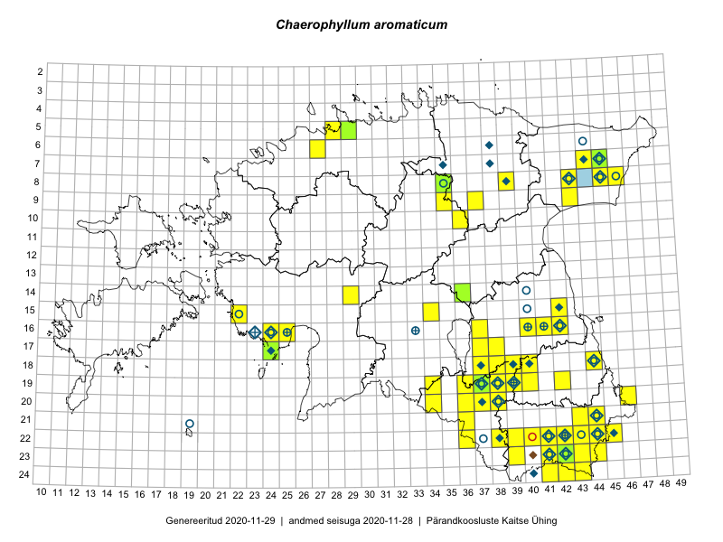

Chaerophyllum aromaticum
Uuendatud: 2016-12-08
Kaardile koondatud taksonid: Chaerophyllum aromaticum L.

Kaart põhineb 91 kirjel, neist vaatlusi 88 ja eksemplare 3. Taksonit on leitud 44 ruudust.
| Ruut | Vaatleja(d) | Vaatlusaeg | Kirje tüüp | Viide andmebaasikirjele |
|---|---|---|---|---|
| 07-45 | Thea Kull | 2015-04-27 | ruut/ala | vaata PlutoFis |
| 07-45 | Thea Kull | 2015-04-27 | ruut/ala | vaata PlutoFis |
| 07-45 | Thea Kull | 2015-04-27 | punkt | vaata PlutoFis |
| ? | Malle Leht | 2015-07-09 | ruut/ala | vaata PlutoFis |
| 16-40 | Thea Kull | 2015-07-07 | ruut/ala | vaata PlutoFis |
| 16-24 | Peedu Saar, Liina Oja | 2015-05-21 | ruut/ala | vaata PlutoFis |
| 16-24 | Peedu Saar, Liina Oja | 2015-05-21 | punkt | vaata PlutoFis |
| 16-42 | Peedu Saar | 2015-05-01 | ruut/ala | vaata PlutoFis |
| 16-42 | Peedu Saar | 2015-05-01 | punkt | vaata PlutoFis |
| 16-42 | Peedu Saar | 2015-05-01 | ruut/ala | vaata PlutoFis |
| 16-42 | Peedu Saar | 2015-05-01 | punkt | vaata PlutoFis |
| 08-45 | Peedu Saar, Liina Oja | 2015-07-22 | punkt | vaata PlutoFis |
| 18-44 | Peedu Saar | 2015-07-04 | ruut/ala | vaata PlutoFis |
| 24-43 | Ott Luuk, Peedu Saar | 2015-08-13 | ruut/ala | vaata PlutoFis |
| 15-42 | Peedu Saar, Eerik Leibak | 2015-07-30 | ruut/ala | vaata PlutoFis |
| 16-41 | Peedu Saar, Eerik Leibak | 2015-07-30 | ruut/ala | vaata PlutoFis |
| 23-43 | Ott Luuk, Peedu Saar | 2015-08-12 | ruut/ala | vaata PlutoFis |
| 08-45 | Peedu Saar, Liina Oja | 2015-07-22 | ruut/ala | vaata PlutoFis |
| 18-40 | Malle Leht | 2015-07-25 | ruut/ala | vaata PlutoFis |
| 18-40 | Malle Leht | 2015-05-12 | ruut/ala | vaata PlutoFis |
| ? | Malle Leht | 2015-07-08 | ruut/ala | vaata PlutoFis |
| 19-40 | Malle Leht | 2015-07-18 | ruut/ala | vaata PlutoFis |
| 07-45 | Toomas Kukk, Tiit Hallikma | 2015-06-01 | ruut/ala | vaata PlutoFis |
| 07-45 | Toomas Kukk, Tiit Hallikma | 2015-06-01 | punkt | vaata PlutoFis |
| 23-42 | Peedu Saar, Ott Luuk | 2015-08-12 | ruut/ala | vaata PlutoFis |
| 24-42 | Peedu Saar, Ott Luuk | 2015-08-13 | ruut/ala | vaata PlutoFis |
| 07-44 | Tiit Hallikma, Toomas Kukk | 2015-07-20 | ruut/ala | vaata PlutoFis |
| 07-45 | Ott Luuk, Hannes Pehlak | 2015-07-22 | ruut/ala | vaata PlutoFis |
| 22-38 | Peedu Saar | 2015-10-01 | ruut/ala | vaata PlutoFis |
| 16-42 | Peedu Saar | 2015-05-16 | punkt | vaata PlutoFis |
| 08-43 | Thea Kull, Eerik Leibak | 2016-07-24 | ruut/ala | vaata PlutoFis |
| 08-46 | Meeli Mesipuu, Timo Luhamäe | 2015-07-21 | ruut/ala | vaata PlutoFis |
| 08-46 | Thea Kull, Eerik Leibak | 2015-07-23 | ruut/ala | vaata PlutoFis |
| 16-42 | Peedu Saar | 2015-05-16 | ruut/ala | vaata PlutoFis |
| 08-35 | Jana-Maria Habicht, Ester Valdvee, Kirke Pilvik | 2015-07-14 | ruut/ala | vaata PlutoFis |
| 09-35 | Jana-Maria Habicht, Ester Valdvee, Kirke Pilvik, Anu Nurk | 2015-07-30 | ruut/ala | vaata PlutoFis |
| 08-46 | Thea Kull, Eerik Leibak | 2015-07-23 | punkt | vaata PlutoFis |
| 08-46 | Thea Kull, Eerik Leibak | 2015-07-23 | punkt | vaata PlutoFis |
| 08-43 | Thea Kull, Eerik Leibak | 2015-07-24 | punkt | vaata PlutoFis |
| 17-24 | Ott Luuk, Eerik Leibak | 2015-05-21 | ruut/ala | vaata PlutoFis |
| 17-24 | Ott Luuk, Eerik Leibak | 2015-05-21 | punkt | vaata PlutoFis |
| 15-34 | Maria Abakumova, Helle Mäemets | 2015-07-30 | ruut/ala | vaata PlutoFis |
| 16-24 | Maret Gerz, Leena Gerz | 2015-08-09 | ruut/ala | vaata PlutoFis |
| 19-37 | Eeva-Maria Jeletsky, Tarmo Niitla | 2015-08-10 | ruut/ala | vaata PlutoFis |
| 08-39 | Meeli Mesipuu, Maret Gerz | 2015-05-13 | punkt | vaata PlutoFis |
| 16-25 | Maret Gerz, Leena Gerz | 2015-08-09 | ruut/ala | vaata PlutoFis |
| 23-41 | Eeva-Maria Jeletsky, Tarmo Niitla | 2015-08-03 | ruut/ala | vaata PlutoFis |
| 22-42 | Karin Kikas, Elle Rajandu | 2015-05-25 | ruut/ala | vaata PlutoFis |
| 19-39 | Karin Kikas, Elle Rajandu | 2015-05-15 | ruut/ala | vaata PlutoFis |
| 17-24 | Maret Gerz, Leena Gerz | 2015-08-12 | ruut/ala | vaata PlutoFis |
| 15-22 | Maret Gerz, Leena Gerz | 2015-08-15 | ruut/ala | vaata PlutoFis |
| 08-39 | Maret Gerz, Meeli Mesipuu | 2015-05-12 | ruut/ala | vaata PlutoFis |
| 08-46 | Timo Luhamäe, Meeli Mesipuu | 2015-07-21 | punkt | vaata PlutoFis |
| 07-44 | Timo Luhamäe, Eerik Leibak | 2015-05-30 | ruut/ala | vaata PlutoFis |
| 07-44 | Timo Luhamäe, Eerik Leibak | 2015-05-30 | punkt | vaata PlutoFis |
| 16-40 | Maret Gerz, Ott Luuk | 2014-06-25 | ruut/ala | vaata PlutoFis |
| 08-46 | Eerik Leibak | 2016-05-12 | ruut/ala | vaata PlutoFis |
| 08-46 | Eerik Leibak | 2016-05-12 | punkt | vaata PlutoFis |
| 21-36 | Kai Rünk, Ülle Jõgar, Illi Tarmu | 2016-06-15T06:00Z | ruut/ala | vaata PlutoFis |
| 18-40 | Toomas Kukk, Tiit Hallikma, Johannes Kõdar | 2016-06-13 | ruut/ala | vaata PlutoFis |
| 23-42 | Rein Kalamees, Eerik Leibak | 2016-06-14 | ruut/ala | vaata PlutoFis |
| 22-42 | Toomas Kukk, Tiit Hallikma, Johannes Kõdar | 2016-06-15 | ruut/ala | vaata PlutoFis |
| 22-43 | Toomas Kukk, Tiit Hallikma, Johannes Kõdar | 2016-06-15 | ruut/ala | vaata PlutoFis |
| 23-42 | Rein Kalamees, Eerik Leibak | 2016-06-14 | punkt | vaata PlutoFis |
| 23-44 | Rein Kalamees, Eerik Leibak | 2016-06-15 | ruut/ala | vaata PlutoFis |
| 22-41 | Toomas Kukk, Tiit Hallikma | 2016-06-16 | ruut/ala | vaata PlutoFis |
| 22-38 | Rein Kalamees, Eerik Leibak | 2016-06-16 | ruut/ala | vaata PlutoFis |
| 23-41 | Sander Laherand, Ott Luuk, Susanna Vain | 2016-06-15 | ruut/ala | vaata PlutoFis |
| 19-34 | Silvia Pihu, Illi Tarmu | 2015-07-11 | punkt | vaata PlutoFis |
| 20-34 | Silvia Pihu, Illi Tarmu | 2015-07-13 | ruut/ala | vaata PlutoFis |
| 21-36 | Silvia Pihu | 2015-06-28 | ruut/ala | vaata PlutoFis |
| 22-36 | Silvia Pihu | 2015-06-27 | ruut/ala | vaata PlutoFis |
| 19-36 | Peedu Saar, Tarmo Niitla | 2016-06-14 | ruut/ala | vaata PlutoFis |
| 24-41 | Ott Luuk, Sander Laherand, Susanna Vain | 2016-06-15 | ruut/ala | vaata PlutoFis |
| 19-37 | Maret Gerz, Liina Oja | 2016-06-16 | ruut/ala | vaata PlutoFis |
| 20-37 | Maret Gerz, Liina Oja | 2016-06-16 | ruut/ala | vaata PlutoFis |
| 18-44 | Maret Gerz, Liina Oja | 2016-06-17 | ruut/ala | vaata PlutoFis |
| 09-35 | Toomas Kukk, Tiit Hallikma | 2016-07-25 | ruut/ala | vaata PlutoFis |
| 22-42 | Thea Kull, Peedu Saar | 2016-08-04 | ruut/ala | vaata PlutoFis |
| 17-37 | Rein Kalamees, Kersti Püssa | 2016-07-20 | ruut/ala | vaata PlutoFis |
| 22-43 | Peedu Saar, Thea Kull | 2016-08-04 | ruut/ala | vaata PlutoFis |
| 22-42 | Peedu Saar, Thea Kull | 2016-08-04 | punkt | vaata PlutoFis |
| 21-44 | Peedu Saar, Karin Kikas | 2016-08-18 | ruut/ala | vaata PlutoFis |
| 22-44 | Peedu Saar, Karin Kikas | 2016-08-19 | ruut/ala | vaata PlutoFis |
| 20-46 | Timo Luhamäe, Meeli Mesipuu | 2016-06-14 | ruut/ala | vaata PlutoFis |
| 23-43 | Timo Luhamäe, Meeli Mesipuu | 2016-06-15 | punkt | vaata PlutoFis |
| 09-43 | Rein Kalamees, Kersti Püssa | 2016-06-29 | ruut/ala | vaata PlutoFis |
| 09-35 | Tiit Hallikma, Toomas Kukk | 2016-07-25 | punkt | vaata PlutoFis |
| 07-45 | Peedu Saar, Thea Kull | 2015-04-27 | eksemplar | vaata PlutoFis |
| 08-35 | Jana-Maria Habicht | 2015-07-15 | eksemplar | vaata PlutoFis |
| 08-35 | Jana-Maria Habicht | 2015-07-15 | eksemplar | vaata PlutoFis |